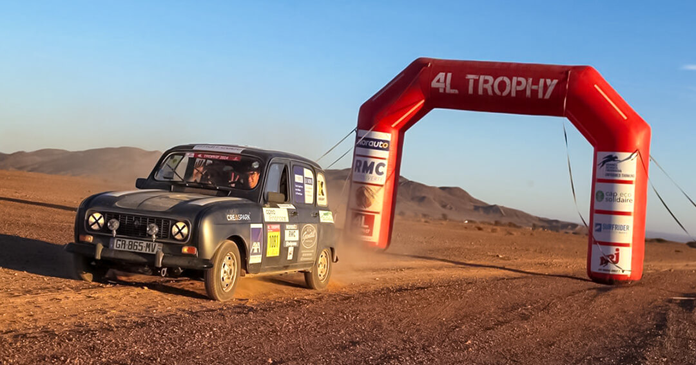

COMMENT NOUS SOUTENIR ?
Rejoindre l'aventure
Derrière notre 4L grise, il y a des cahiers, des stylos et des ballons qui prendront la route des villages du Haut Atlas. En nous soutenant, vous nous aidez à arriver jusqu'à Marrakech — et à offrir un peu plus d'école, de sport et d'avenir à des enfants qui en manquent.
Ensemble, faisons de ce trajet un voyage qui compte.
+20 000 enfants aidés / an20 000 repas Croix-Rouge6 000 km de piste
Devenir sponsor

